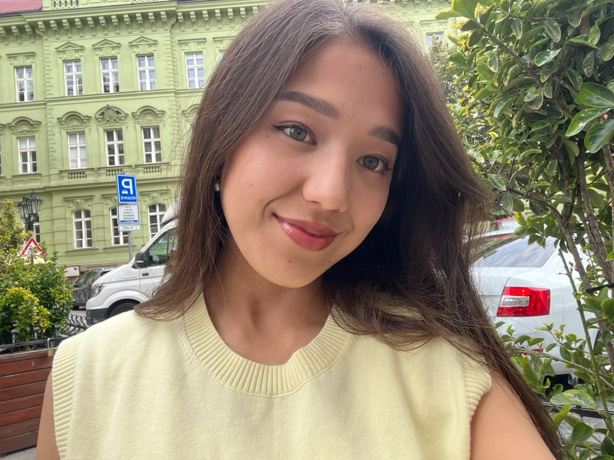

Her gün bir önceki versiyonumdan daha iyi olmaya çalışıyorum.
Kod yazıyor, öğreniyor ve hayallerimi adım adım gerçeğe dönüştürüyorum.
Merhaba! Ben Asel, 21 yaşında Bilgisayar Mühendisliği öğrencisiyim. Orhun Değişim Programı kapsamında şu an Türkiye'deyim. Full Stack + AI geliştirici olmak için çalışıyor, öğreniyor ve her gün biraz daha büyüyorum.
Sıradan şeyleri tekrar etmek sevmiyorum; benzersiz fikirler ve farklı çözümler üretmeyi seviyorum. Seyahat, yeni insanlar ve fikir alışverişi benim için büyümenin en güçlü yolu. Çevremin kişiliğimi şekillendirdiğine inanıyorum — bu yüzden iyi insanlarla çevrilmeye önem veriyorum.
Bu web sitesinin adı aynı zamanda kişisel markamın adı. ARI soyadımdan — Aripzhanova. SEL ise adımdan — Asel. İkisi bir araya gelince ARISEL çıktı. Hem benim hem de olmak istediğim kişinin adı.
Buraya gelen yol — her durağın bir hikayesi var
Anavatanım. Orta Asya'nın dağları ve gelenekleri arasında merakın doğduğu yer. Her şeyimin temeli.
KökenAlgoritmaların sanata, problem çözmenin ise bir yaşam biçimine dönüştüğü yer. Gerçek yolculuğun başlangıcı.
EğitimTürk dünyası öğrencilerini bir araya getiren prestijli programa seçildim. Hayatımı değiştiren bir fırsat.
DeğişimŞu an buradayım! Yeni kültür, yeni dil, yeni bakış açıları. Her yönden büyüyorum ve büyümeye devam ediyorum.
◉ Şu AnGerçek dünya projeleri inşa ediyorum, açık kaynağa katkı sağlıyorum ve fikirleri koda dönüştürüyorum.
BüyümeKültürleri birbirine bağlayan ve gerçek etki yaratan akıllı ürünler geliştirmek. Kendi startup'ım, kendi hikayem.
GelecekBu anın bir fotoğrafı — Haziran 2026 · Hayatımın neresindeyim?
Haziran 2026 · Anlık durum raporu
Çok yoğundu ama çok şey öğrendim. Her sınav yeni bir kapı araladı ve kendimi geliştirdiğimi hissettim.
Sabah meyve suyu ile başlıyor, gece sütlü kahve ile bitiyor. Bu sistem böyle çalışıyor.
İki dünya arasında sıkışmış bir şehrin hikayesi. Hem İstanbul'u hem kendimi daha iyi anlıyorum.
Tokyo sokaklarında yürümek, Fuji'yi görmek, Japon teknoloji kültürünü hissetmek.
Kod yazarken bir şeylerin birden "tıklaması", Balıkesir sabahlarında kahve içmek ve yeni insanlarla güzel sohbetler. ✨
Kurulu iletişim protokolleri — 5 aktif dil
Bu sistemi besleyen şeyler — çevrem en büyük gelişim etkenlerimden biri
Daha önce var olmayan şeyler üretmek. Fikirleri kod aracılığıyla gerçeğe dönüştürmenin verdiği o özel duygu benim için eşsiz.
Derin sohbetler ve farklı bakış açıları. Birinin deneyiminden öğrenmek, onlarca kitap okumak kadar değerlidir.
Her yeni yer beyni yeniden şekillendirir. Kültürel derinleşme, en üst düzey öğrenme deneyimidir.
Köklerim ve nedenim. İyi bir çevre insanların daha iyi biri olmasına yardım eder. Ben buna derinden inanıyorum.
Farklı kültürleri merak ediyorum. Her toplumun farklı bir bilgeliği var; bu çeşitlilik dünya görüşümü zenginleştiriyor.
Zihni besleyen kaynaklar — sürekli öğrenmenin en eski yolu
İnsan zihnini anlamak için okuyorum. Davranış kalıpları, motivasyon ve insan doğası beni büyülüyor. Her kitap insanları daha iyi anlamama yardımcı oluyor.
Bazen tamamen başka bir dünyanın içine girmek gerekiyor. Romanlar bana farklı hayatları ve farklı bakış açılarını yaşatıyor.
Teknolojinin nasıl şekillendiğini, büyük ürünlerin nasıl üretildiğini ve vizyoner insanların nasıl düşündüğünü anlamak istiyorum.
Her gün daha iyi biri olmak için okuyorum. Alışkanlıklar, odaklanma ve anlam arayışı üzerine kitaplar benim için özellikle değerli.
"Okuma, insanın yaşamadığı deneyimleri yaşamasının ve gitmediği yerlere gitmesinin en güzel yolu."
☕Ekranın ötesinde — gerçek dünyadaki rutinlerim
Günlük yürüyüşler zihni açar. En iyi fikirler, en iyi hata ayıklamalar yürürken yapılır.
Doğa yürüyüşleri, parklar — dijital dünyanın dışındaki gerçeklikle bağlantı kurmak. Kırgızistan'ın dağları hâlâ içimde.
Şehri iki tekerlekle keşfetmek. Her yokuş bir mücadele, her düzlük bir özgürlük hissi.
Suyun altında sessizlik. Düşünceleri temizlemek ve zihni sıfırlamak için en iyi yöntem.
Anları, ışığı ve sıradan şeylerin güzelliğini yakalamak. Her kare bir hikaye anlatır.
Her mahallenin bir hikayesi vardır. Kasıtlı olarak kaybolmak, keşiflerin gerçekleştiği andır.
Sabah başlatıcısı. Düşünce katalizörü. Bu sistem kahvesiz düzgün çalışmaz — zorunlu donanım.
Karpuz, elma ve çiçekler — hem lezzet hem güzellik. Doğanın en iyi hediyeleri bunlar.
Lütfen kullanmadan önce dikkatlice okuyun · ARISEL OS v2.0 Resmi Dökümantasyonu
Birlikte bir şeyler üretelim — ya da sadece merhaba deyin
$ ping aselkou --mesaj "merhaba"
PING aselkou (insan.port:443) — bağlandı.
Yanıt: İş birliği ve staj fırsatlarına açığım!
Yanıt: AI, web geliştirme veya seyahat hakkında konuşalım.
Yanıt: Teknoloji gerçek sorunları çözmelidir — buna inanıyorum.
Yanıt: ~24 saat içinde yanıtlarım. Bot değil, gerçekten benim 🙂
$ █